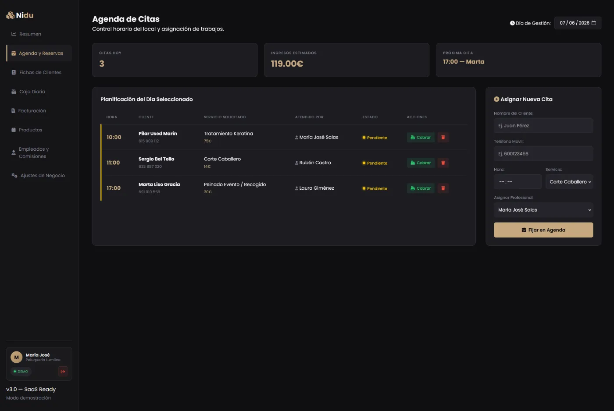
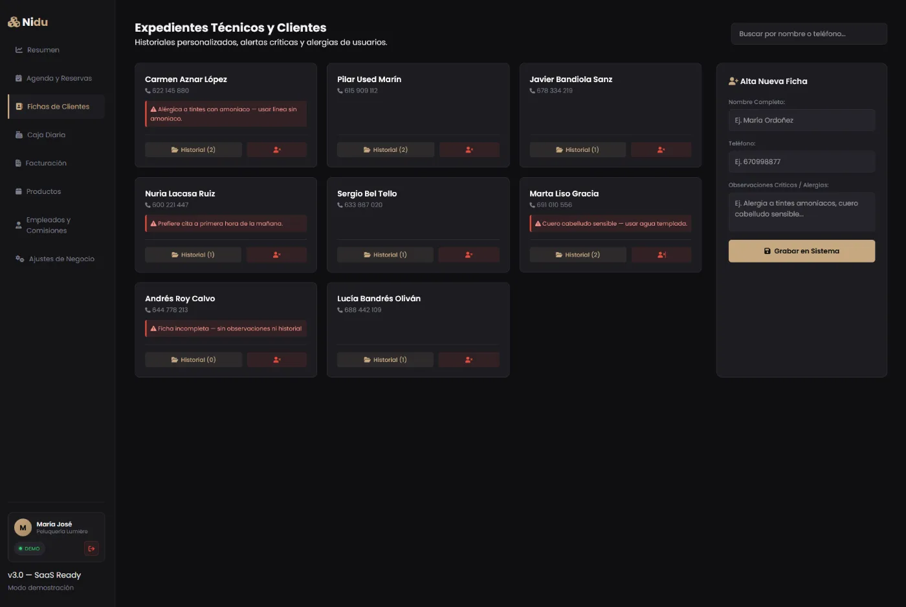
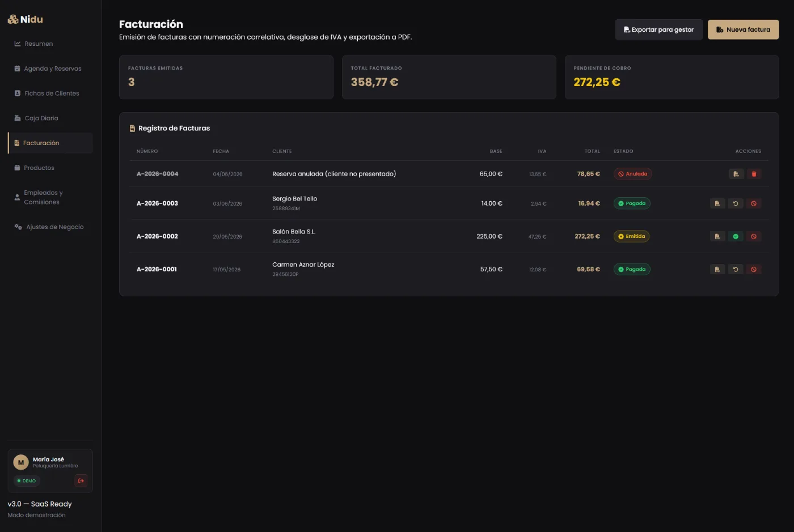
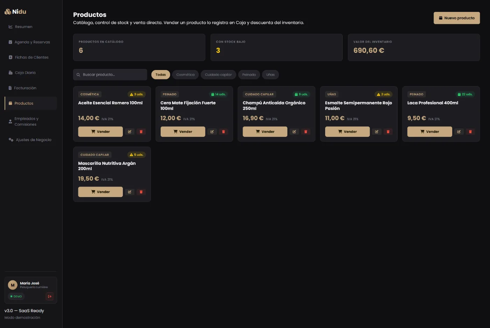

Agenda y reservas
Citas y reservas con cálculo de aforo en tiempo real. Sabes de un vistazo qué hueco queda libre y cuándo estás al completo.
PULSA PARA REACTIVAR
Toda tu operativa. Un solo núcleo.
Nidu es el software web que estoy construyendo para los negocios de barrio — talleres, peluquerías, barberías, tiendas. Agenda, clientes, caja y comisiones dejan de vivir en cuadernos y hojas sueltas y pasan a un único panel, claro y rápido.

Cada función nace de un problema real de un negocio pequeño: la cita que se pierde, la caja que no cuadra, el cliente del que no recuerdas nada. Nidu lo junta todo en un sitio.
Citas y reservas con cálculo de aforo en tiempo real. Sabes de un vistazo qué hueco queda libre y cuándo estás al completo.
Expedientes con el historial de cada cliente y alertas automáticas. Recuerdas lo importante sin depender de la memoria.
Caja del día y libro de movimientos. Cada ingreso y gasto queda registrado, así el cierre cuadra siempre.
Cada empleado, su comisión calculada sola a partir de lo que produce. Se acabó la calculadora a fin de mes.
Respaldo automático y duplicado de tus datos. Si algo falla, tu negocio no pierde su información.
Todo lo anterior vive junto, con la misma lógica y el mismo diseño. Nada de saltar entre apps ni cuadernos.
Capturas reales del panel en marcha. Esto es lo que usa el negocio cada día.
La planificación del día: hora, cliente, servicio, quién atiende y si está cobrado o pendiente. Con total de citas e ingresos estimados.

Cada cliente con su historial y avisos críticos — alergias, preferencias, cuero cabelludo sensible. Lo importante, siempre a la vista.

Facturas con numeración correlativa, desglose de IVA y exportación a PDF. Estados de pagada, emitida o anulada y total pendiente de cobro.

Catálogo con control de stock y venta directa: vender un producto lo registra en caja y descuenta del inventario automáticamente.
No es un ERP gigante ni una hoja de cálculo improvisada. Es el punto medio que le faltaba al comercio de toda la vida.
Nidu está al 90% y la enseño funcionando en una demo, contigo delante, para resolver tus dudas en directo. Escríbeme y la vemos juntos.
Pedir una demo conmigo